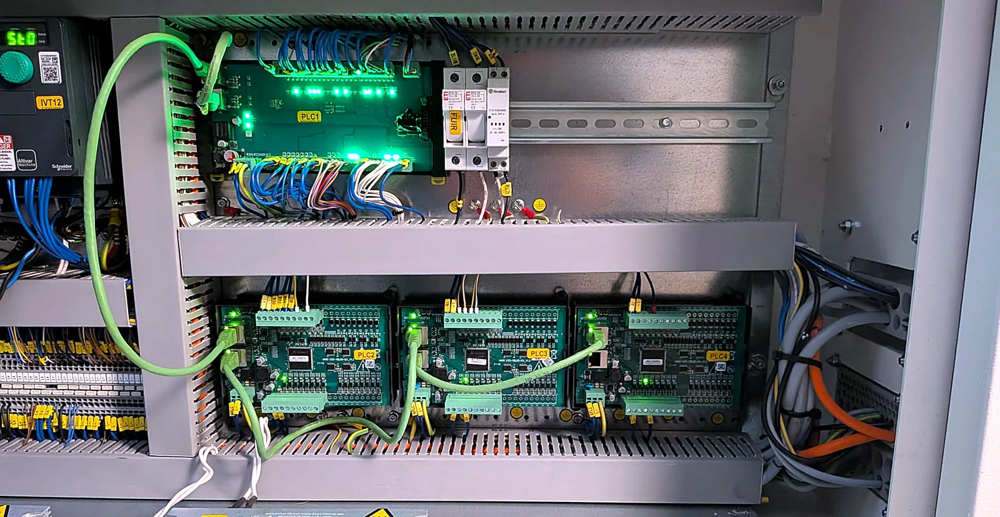
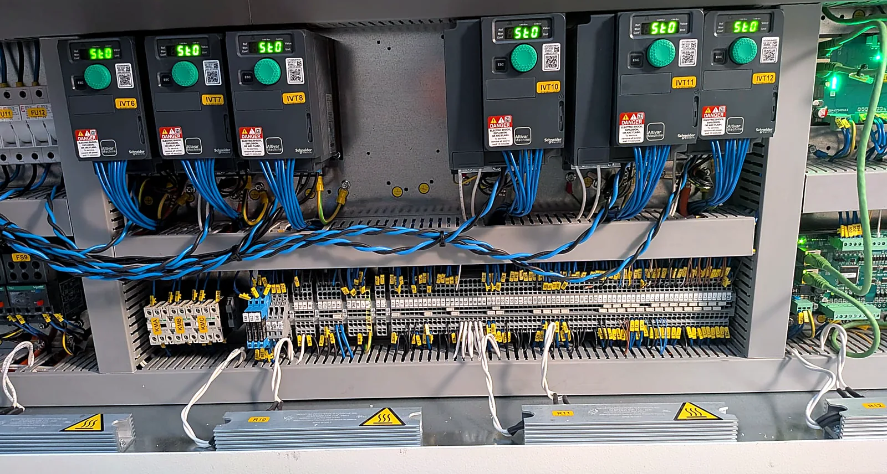
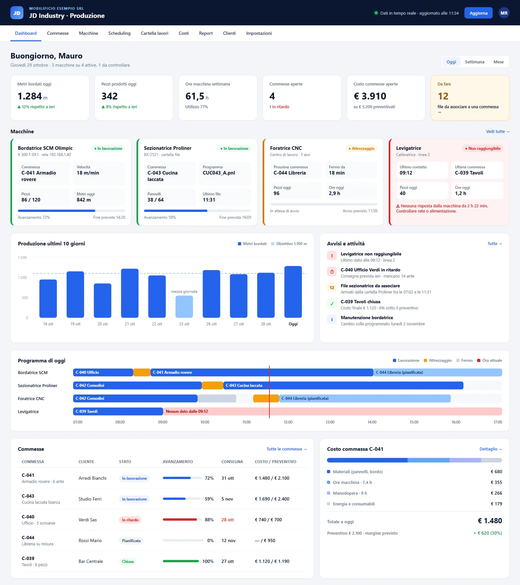

Technical objective
Make operating information available in the production system and associate it with the active job.
Industrial projects · JDEVPRO
Two industrial machine integrations delivered in the past month: an SCM edgebander with Maestro Active and Essetre/Tecnoessetre CNCs. These pages document completed work. Across all projects, JDEVPRO has connected 25 machines in 15 companies.
Real project · Past month · SCM edgebander
Connection between machine events, production data and job management.
Make operating information available in the production system and associate it with the active job.
Machine status and alarms, jobs opened and closed through the machine, and automatic import of production data.
Job costing based on actual processing time and recorded edge-banding metres.
SCM and Maestro Active identify the integrated technology; no manufacturer partnership is implied.
Real project · Past month · Essetre CNC
Operational integration between CNC machines and production software.
Manage equipment and jobs in a shared view, with clear references to work orders and processing files.
Multiple machines in one view, events linked to jobs, and transfer of work files.
Inventory and offcut management, with printable economic and production reports.
Descriptions are technical and anonymised: no unverified productivity gains, ROI or project-specific tax certifications are claimed.
Real field photographs
Original photographs from a machine interconnection: PLC boards connected to the network, and drives and terminal blocks in the cabinet.


A closer look at the SCM and Essetre projects
The two completed integrations connect machine data with production management. This is a closer look at those cases, not an additional independent project.
Machine status, alarms, opened and closed jobs, actual working time and edge-band metres feed production-job costs.
Multiple CNC machine status views, file transfer, job events, stock and costing reports in one production system.
Data collected on the shop floor becomes usable production progress, traceability and job management information, without manual re-entry.
Product interface
Example interface showing the type of information that can be organised by the production system.

JDEVPRO delivery
We first assess the machine make, model, available interfaces and required data. If existing business software can be used, we integrate it without requiring replacement.
We handle configuration, data exchange, testing against real operations and technical documentation. Incentive eligibility is assessed separately by independent specialists.